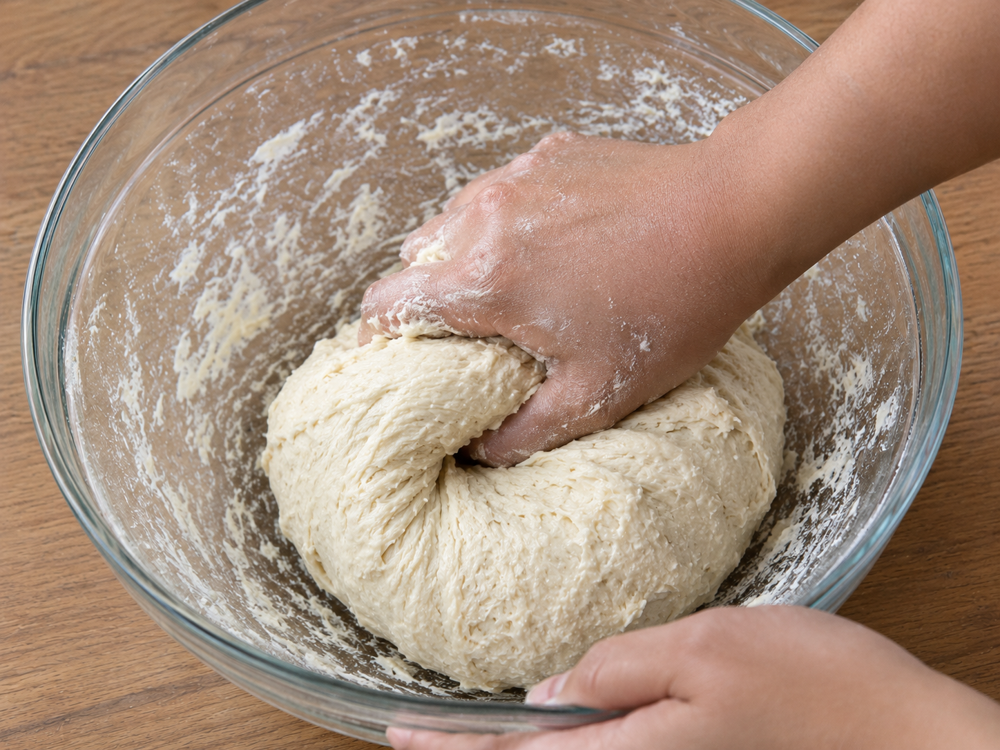

Uleni sampai kalis (aku pake tangan) jangan takut jika adonan lengket ya, lumuri tangan sesekali dg tepung (tapi jangan menambahkan tepung) uleni terus sampai adonan kalis.

Kalisnya adonan canai tidak sekalis adonan roti ya, kira2 seperti ini sudah cukup.